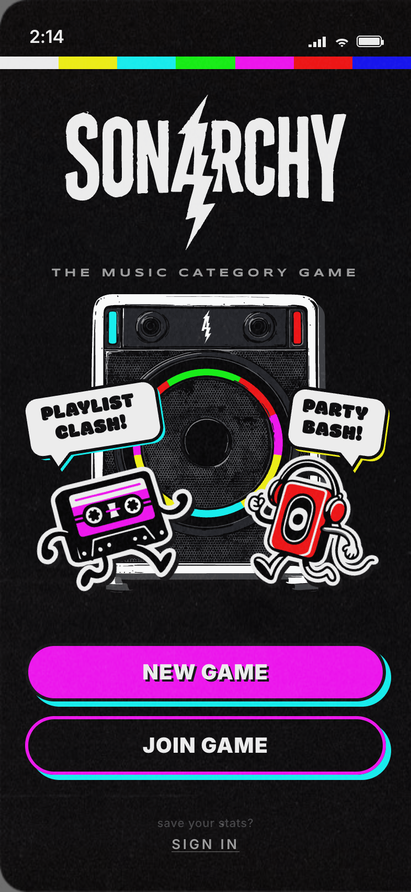
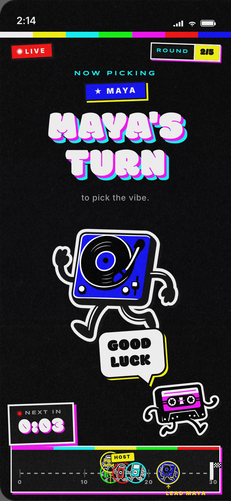
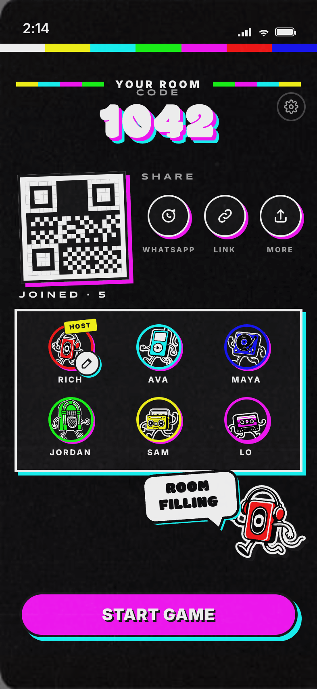
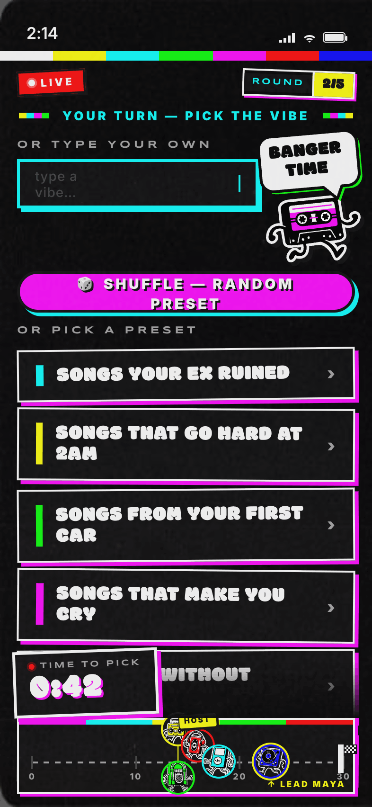
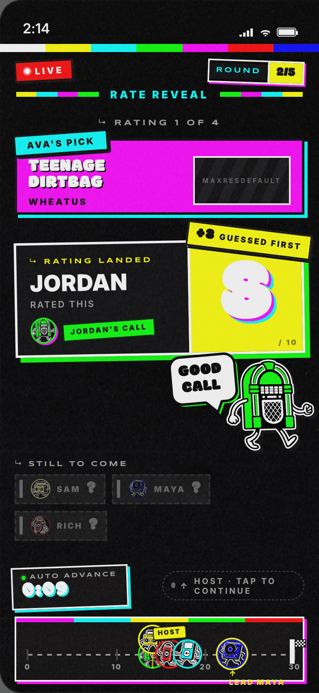
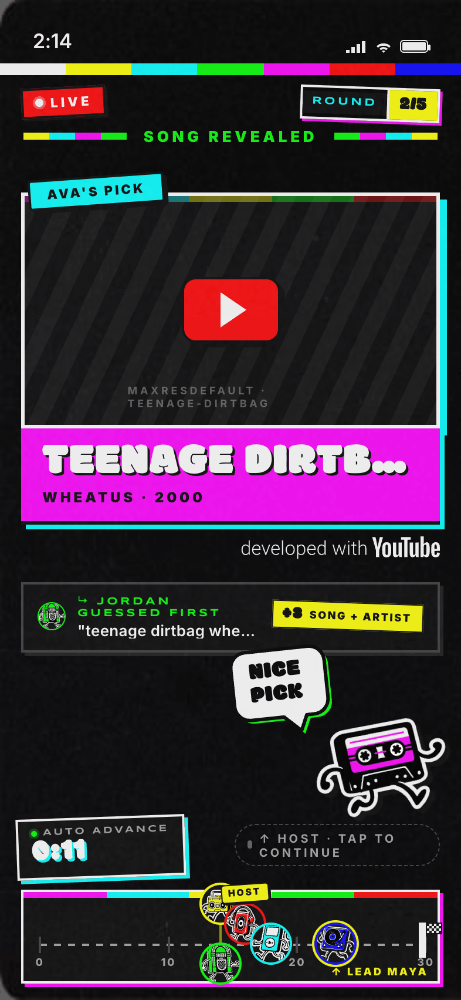
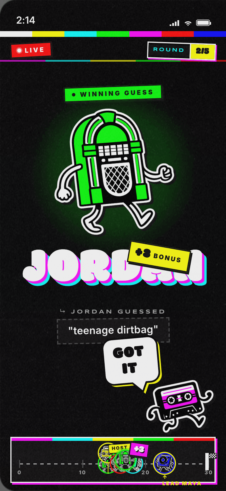
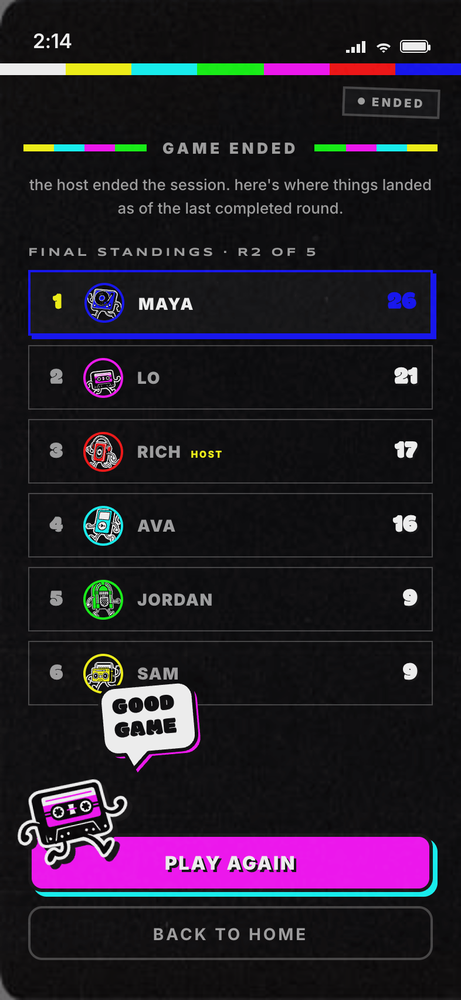

It worked in the room, then showed its seams
Sonarchy started ORIGIN, the human spark: where the idea landed, the moment "rate each other's songs" turned into a game. v1 was rough on purpose, just enough to put real phones in real hands and watch a room play.
It worked: people got loud, argued over scores, queued the next track before the last finished. The core was right. But the seams showed, the host fumbled between playing music and driving the game, ratings were fiddly, and the best moment in the room, the score reveal, passed too quietly to land.
v1 proved the game, but the build couldn't carry it. Keep the idea, throw away the code, rebuild spec-first.


One phone has to be the whole arcade
What makes Sonarchy work is also what makes it hard: it all happens on one phone. The host's phone is the jukebox, the screen, the referee and the source of truth, at once, in a noisy room, over a Bluetooth speaker.
That sets hard limits I don't control: the phone plays the audio, so it can't hide the song from whoever's holding it; it streams from YouTube, so their rules decide what's allowed; it pipes sound over Bluetooth, so latency is a fact, not a bug.
How do you build a fair, loud, fast party game when one device does everything, and half the constraints aren't yours to change?
Three jobs, one device, and the hardest isn't a feature, it's keeping the game fair when the host is holding the answer.
Compliance first, physics second, fairness third
Rather than design the game and bolt the constraints on after, I ordered them, and let the order drive every later decision.
YouTube's terms come first, breaking them ends the product, not just a feature. Audio and Bluetooth physics come next, no clever mechanic survives half a second of speaker lag. Fairness comes third, not because it matters least, but because it's the one I fully control, so it bends to fit the other two.
Design the party around the phone's limits instead of fighting them.
YouTube compliance
Search, playback and quota all run inside YouTube's terms. A cached search layer keeps usage low; nothing reaches the room that shouldn't.
Audio & Bluetooth physics
The host phone is the audio source. Timing is anchored to the device, not a server clock, so the speaker and the screen stay in sync even when the network drifts.
Fairness
The host sees the title, so the host never guesses. Scoring and reveals are built so the game can't be quietly gamed.
Casey and Walker run the room
A party game needs a host. Sonarchy has two. Casey is a pink cassette, scrappy, picks fights. Walker is a green walkman, drier, the straight man. They open each round, narrate the guesses, and reveal who rated what.
They speak in two words, always, in caps, ENORMOUS BETRAYAL, BOLD CHOICE, which keeps them fast, quotable and readable across a loud room. The round, in six beats:
Pick a category
Casey and Walker tee up the round.
A song plays
Through the speaker, host phone driving it.
Guess it
Everyone but the host races to name the track.
Rate it
One to ten, on a slider built for thumbs, not a ranked list.
The reveal
Scores come back attributed, character by character. The loudest beat in the game.
The leaderboard
A running timeline told through the characters, not a spreadsheet.
The big redesign from v1 lives here: ranking became a 1–10 slider (richer signal, one-thumb easy); a guess phase now sits before the rating reveal, so the room commits before it judges; and the reveal went from a quiet number to a hosted, attributed moment, the thing the whole round builds toward.






A production backend for a party trick
Under the hood it's a state machine, lobby → category → play → guess → rate → reveal → leaderboard, driven by Supabase Realtime, so every phone in the room turns over together. Clients read only; every write runs through a locked server function, so scores and the answer can't be lifted from a phone or faked from the network tab. Integrity lives in the architecture, not in hope.
The non-obvious calls
The host never guesses
The host's phone plays the audio, so it sees the title. Fairness falls out of who's holding the jukebox, not a rule bolted on.
A slider, not a ranking
One to ten reads instantly and moves with one thumb. Ranking everyone's songs was precise, and nobody enjoyed it.
Design the party, not the screen
The lesson v1 kept teaching: the room is the product, not the interface. The best Sonarchy isn't the one with the most features, it's the one where a phone, a speaker and six people can be loud together without the game getting in the way.
Order your constraints
Naming what comes first, compliance, physics, fairness, made every later decision faster and less arguable.
The seams are the work
v1's "small" friction was the whole game. Fixing the reveal, the rating and the host's job was the rebuild.
Launch and live play
Ship to stores, watch real rooms, let the numbers come in.
More of the cast
The six characters are a system, not a set, room to grow the show.